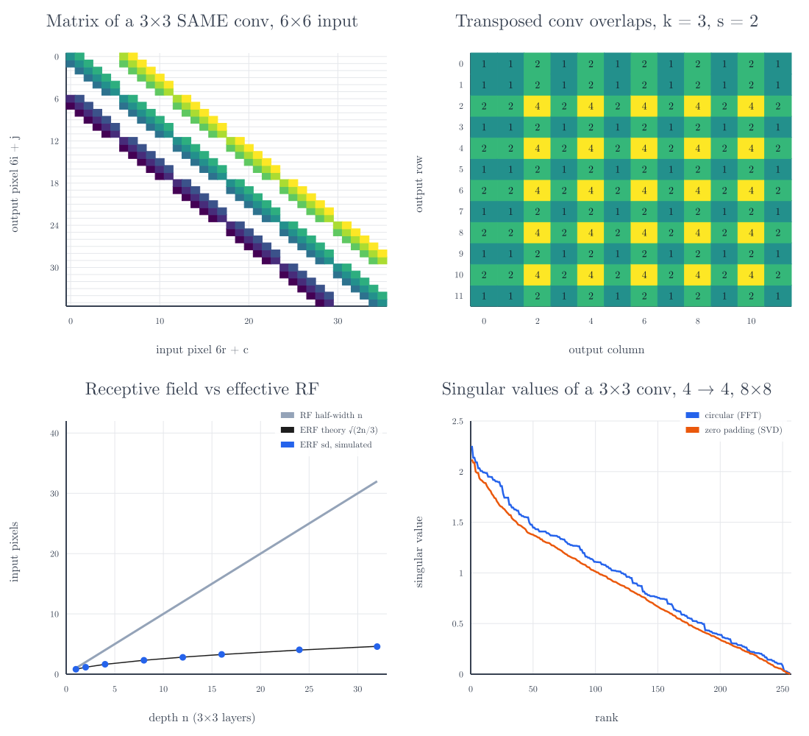
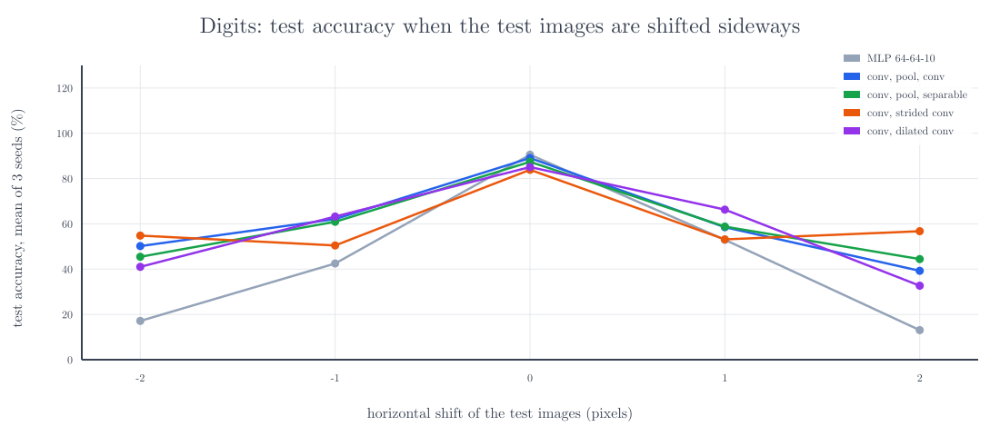

Convolution Layers as Matrices: Shapes, Transposes, Receptive Fields and Spectra
Abstract
A convolution layer is a linear map with a sparse matrix of repeated entries. This report builds that matrix with a new function, nn::conv2d_matrix, and uses it as an independent reference for every
convolution layer in datamunge: 1-D, 2-D, depthwise, separable, dilated and transposed. All agree with their matrices to \(4\times10^{-16}\) or better, and a 3-D convolution agrees with plain loops. The
transposed convolution is the matrix's transpose, and its checkerboard pattern is the column sums of the matrix's sparsity pattern, uniform exactly when the stride divides the kernel size. Receptive
fields from the size-and-jump recursion match the support of one unit's input gradient for five stacks. The effective receptive field of \(n\) random \(3\times3\) layers has standard deviation
\(\sqrt{2n/3}\), as a path-counting argument predicts, against a receptive-field half-width of \(n\). The singular values of a circular convolution, computed from \(64\) small Fourier-domain matrices, match a dense SVD to \(10^{-14}\).
On digits, after a short run of 500 Adam steps, a 5130-parameter convolutional network reaches 89.1% against 90.6% for a dense network of similar size. When the test images move two pixels, the convolutional networks keep 32–57% where the dense network falls to 13–17%.
The problem
Convolution layers apply the same small filter at every position of an image or sequence. They are usually described by their shapes and their output-size rules. Behind those rules is plain linear algebra: for fixed weights, a convolution is multiplication by a matrix, and nearly everything about it can be read from that matrix. The transposed convolution is its transpose, the receptive field is the set of nonzero columns in a row, and how much the layer can amplify a signal is its largest singular value. The matrix is large and sparse, so libraries never form it, and that makes it a good independent check.
This report replaces the original example examples/nn/0_foundations/0.2_reusable_layer_library/conv_layers.cpp. That example checked output sizes, compared the 1-D, 2-D, 3-D, depthwise and separable
layers with hand-written loops, counted parameters, showed that the transposed convolution is the input gradient, printed the checkerboard of overlaps and showed that a dilated kernel is a larger kernel with
holes. All of these are kept here, most of them checked against the explicit matrix, with the theory of receptive fields and singular values added.
The method
Output sizes
A 2-D convolution in datamunge takes an input \(x\) of shape \([N,H,W,C_{\text{in}}]\) and a kernel \(K\) of shape \([k_h,k_w,C_{\text{in}},C_{\text{out}}]\), and computes the cross-correlation
with stride \(s\), dilation \(d\), padding before the data \(p\), and \(x=0\) outside the image. A dilated kernel covers \(k_{\text{eff}}=d(k-1)+1\) positions. Along an axis of length \(L\), VALID padding (none) gives \(\lfloor(L-k_{\text{eff}})/s\rfloor+1\) outputs and SAME padding gives \(\lceil L/s\rceil\), with \(\max(0,(\lceil L/s\rceil-1)s+k_{\text{eff}}-L)\) zeros added and the odd one placed after the data, as in TensorFlow. A depthwise convolution filters each input channel separately with \(M\) filters, and a separable convolution is a depthwise one followed by a \(1\times1\) convolution. A \(k\times k\) separable layer from \(C_{\text{in}}\) to \(C_{\text{out}}\) channels has \(k^2C_{\text{in}}+C_{\text{in}}C_{\text{out}}\) weights instead of \(k^2C_{\text{in}}C_{\text{out}}\), a ratio of \(1/C_{\text{out}}+1/k^2\) (Chollet, 2017; Howard et al., 2017).
The convolution matrix
Flatten one example's input and output in row-major order. The equation above is then \(\operatorname{vec}(y)=M\operatorname{vec}(x)\), where the row of output \((i,j,o)\) holds \(K_{a,b,q,o}\) in the column
of input \((is+ad-p_h,\,js+bd-p_w,\,q)\) when that position is inside the image, and zeros elsewhere. For stride 1 the entry depends only on the offset between the input and output positions, so
\(M\) is doubly block Toeplitz: block Toeplitz across rows of the image, each block Toeplitz across columns. nn::conv2d_matrix builds \(M\) for any strides, dilations, groups and padding. A depthwise
convolution is a grouped one with one group per input channel, and a separable convolution's matrix is the product of its pointwise and depthwise matrices. With the option circular, positions
outside the image wrap around instead of reading zeros.
The gradient of a loss \(L\) with respect to the input is \(\operatorname{vec}(\partial L/\partial x)=M^\top\operatorname{vec}(\partial L/\partial y)\). This map is the transposed convolution, used as a learned upsampler. Each input pixel of a transposed convolution spreads a copy of the kernel over the output, and adjacent copies are \(s\) apart. With a ones input and a ones kernel, output position \(t\) along one axis receives either \(\lfloor k/s\rfloor\) or \(\lceil k/s\rceil\) copies, so the counts are uniform only when \(s\) divides \(k\). In 2-D the count is a product of two such numbers. Uneven counts give the checkerboard artefacts of generated images (Odena, Dumoulin and Olah, 2016). These counts are the column sums of the 0/1 pattern of \(M\).
Receptive fields
The receptive field of a unit is the set of input positions that can affect it, which is the set of nonzero columns in its row of the product of the layer matrices. Along one axis, a stack of layers with kernels \(k_l\), strides \(s_l\) and dilations \(d_l\) gives
where \(j_l\) is the distance in the input between neighbouring units of layer \(l\) (Dumoulin and Visin, 2016). Pooling layers count as layers with their window and stride. nn::receptive_fields returns
\((r_l,j_l)\) for every layer. Dilations \(1,2,4,\dots,2^{m-1}\) with \(3\times3\) kernels give \(r=2^{m+1}-1\), exponential growth at no extra cost in parameters (Yu and Koltun, 2016).
Not every position in the receptive field matters equally. Take \(n\) stride-1 \(3\times3\) layers, without nonlinearities, with independent zero-mean weights of variance \(\sigma^2\). The gradient of one output with respect to an input pixel is a sum over paths through the layers of products of weights. Two different paths differ in at least one weight, which appears once in their product, so the cross terms vanish in expectation and
The number of paths is the convolution of \(n\) copies of the \(3\times3\) box. Along each axis it is the distribution of a sum of \(n\) independent steps uniform on \(\{-1,0,1\}\), each with variance \(2/3\). The squared gradient therefore has standard deviation \(\sqrt{2n/3}\) per axis and tends to a Gaussian, while the receptive field has half-width \(n\). The share of the receptive field that matters shrinks like \(1/\sqrt n\): this is the effective receptive field of Luo et al. (2016). With all weights equal to 1 the gradient is the path count itself, and its square, close to a squared Gaussian, has standard deviation about \(\sqrt{n/3}\).
Singular values from the Fourier transform
With circular padding and stride 1, the matrix commutes with every circular shift of the image. The 2-D discrete Fourier transform therefore block-diagonalises it, and
where \(F\) is the unitary 2-D DFT, \(K_{a,b}\) is the \(C_{\text{in}}\times C_{\text{out}}\) matrix of tap \((a,b)\), and the sign and conjugation conventions do not change singular values. The singular values of
\(M\) are thus the union, over the \(HW\) frequencies, of the singular values of the small complex matrices \(\hat K(u,v)\) (Sedghi, Gupta and Long, 2019). nn::conv2d_circular_singular_values computes them
through the real form \(\begin{pmatrix}\operatorname{Re}\hat K&-\operatorname{Im}\hat K\\\operatorname{Im}\hat K&\operatorname{Re}\hat K\end{pmatrix}\), which has each singular value of \(\hat K\) twice. That costs \(HW\) decompositions of size \(2C\) instead of one of size \(HWC\).
Two identities check the result. Each weight appears \(HW\) times in the circular matrix, so \(\sum\sigma_i^2=\|M\|_F^2=HW\|K\|_F^2\). Each tap contributes a shift matrix, which is a permutation for circular padding and a partial permutation for zero padding, times \(K_{a,b}\). The triangle inequality then bounds the spectral norm of either matrix by \(\sum_{a,b}\|K_{a,b}\|_2\). This is a cheap bound used in Lipschitz estimates.
Simple examples
Shapes, every layer against its matrix, and parameter counts
The program prints the output lengths for an input of length 7 and kernel 3 from the closed forms, from nn::conv_output_size and from a conv1d layer. It then compares each layer with an independent
reference. The 2-D, 1-D, depthwise, separable and dilated layers are compared with nn::conv2d_matrix, applied by a matrix product. The 3-D layer is compared with loops, and the transposed convolution with the
autograd input gradient and with \(M^\top\). Last come the parameter counts from the layers' stores. Everything runs in float64.
#include <dm/dm.hpp>
namespace nn = dm::nn;
using nn::Padding;
using nn::Tensor;
const auto F64 = nn::DType::Float64;
// Applies a convolution matrix M [rows, H W Cin] to every example of x [N, H, W, Cin].
Tensor apply(const Tensor& M, const Tensor& x) {
const std::int64_t n = x.size(0);
return nn::matmul(nn::reshape(x, {n, x.numel() / n}), nn::transpose(M, {1, 0}));
}
double max_diff(const Tensor& a, const Tensor& b) {
return nn::max(nn::abs(nn::reshape(a, {a.numel()}) - nn::reshape(b, {b.numel()}))).item();
}
const char* pad_name(Padding p) { return p == Padding::Valid ? "VALID" : "SAME"; }
int main() {
nn::Generator gen(1);
// 1. Output length for input length 7 and kernel 3: closed forms, conv_output_size and a conv1d layer.
std::print("| padding | stride | dilation | closed form | conv_output_size | conv1d output |\n| :--- | ---: | ---: | ---: | ---: | ---: |\n");
for (Padding pad : {Padding::Valid, Padding::Same})
for (int s : {1, 2, 3})
for (int d : {1, 2}) {
if (s > 1 && d > 1) continue;
const int keff = d * 2 + 1;
const int closed = pad == Padding::Valid ? (7 - keff) / s + 1 : (7 + s - 1) / s;
nn::ParameterStore p(1, F64);
const Tensor y = nn::conv1d(p, "c", nn::zeros({1, 7, 1}, F64), 1, 3, {.stride = s, .dilation = d, .padding = pad, .bias = false});
std::print("| {} | {} | {} | {} | {} | {} |\n", pad_name(pad), s, d, closed, nn::conv_output_size(7, 3, s, d, pad), y.size(1));
}
// 2. Every layer against an independent reference: the convolution matrix from nn::conv2d_matrix, or loops for 3-D.
std::print("\n| layer | input | output | reference | max abs. difference |\n| :--- | :--- | :--- | :--- | ---: |\n");
auto shape_str = [](const Tensor& t) {
std::string s = "[";
for (std::size_t i = 0; i < t.shape().size(); ++i) s += (i ? ", " : "") + std::to_string(t.shape()[i]);
return s + "]";
};
const Tensor x = nn::normal({2, 6, 5, 3}, 0, 1, gen, F64);
for (Padding pad : {Padding::Valid, Padding::Same})
for (int s : {1, 2})
for (int d : {1, 2}) {
if (s > 1 && d > 1) continue;
nn::ParameterStore p(2, F64);
const Tensor y = nn::conv2d(p, "c", x, 4, 3, {.stride = s, .dilation = d, .padding = pad, .bias = false});
const Tensor M = nn::conv2d_matrix(6, 5, p.at("c/W"), nn::conv_options(s, pad, d));
std::print("| conv2d 3×3, {}, stride {}, dilation {} | {} | {} | matrix | {:.1e} |\n", pad_name(pad), s, d, shape_str(x), shape_str(y), max_diff(y, apply(M, x)));
}
{
nn::ParameterStore p(3, F64);
const Tensor x1 = nn::normal({2, 9, 2}, 0, 1, gen, F64);
const Tensor y1 = nn::conv1d(p, "c", x1, 3, 3, {.padding = Padding::Valid, .bias = false});
const Tensor M = nn::conv2d_matrix(1, 9, p.at("c/W"), nn::conv_options(1, Padding::Valid));
std::print("| conv1d, kernel 3, VALID | {} | {} | matrix (height 1) | {:.1e} |\n", shape_str(x1), shape_str(y1), max_diff(y1, apply(M, nn::reshape(x1, {2, 1, 9, 2}))));
const Tensor x3 = nn::normal({1, 4, 4, 4, 2}, 0, 1, gen, F64);
const Tensor y3 = nn::conv3d(p, "c3", x3, 3, 2, {.padding = Padding::Valid, .bias = false});
const Tensor W3 = p.at("c3/W");
double err = 0;
for (int i = 0; i < 3; ++i)
for (int j = 0; j < 3; ++j)
for (int l = 0; l < 3; ++l)
for (int o = 0; o < 3; ++o) {
double acc = 0;
for (int a = 0; a < 2; ++a)
for (int b = 0; b < 2; ++b)
for (int c = 0; c < 2; ++c)
for (int ci = 0; ci < 2; ++ci) acc += x3.at({0, i + a, j + b, l + c, ci}) * W3.at({a, b, c, ci, o});
err = std::max(err, std::abs(acc - y3.at({0, i, j, l, o})));
}
std::print("| conv3d, kernel 2, VALID | {} | {} | loops | {:.1e} |\n", shape_str(x3), shape_str(y3), err);
}
const Tensor x6 = nn::normal({1, 6, 6, 3}, 0, 1, gen, F64);
{
nn::ParameterStore p(4, F64);
const Tensor dw = nn::depthwise_conv2d(p, "dw", x6, 2, 3, {.bias = false});
// Depthwise = grouped convolution with one group per input channel: [3, 3, C, M] -> [3, 3, 1, C M].
const Tensor Mdw = nn::conv2d_matrix(6, 6, nn::reshape(p.at("dw/W"), {3, 3, 1, 6}), {.groups = 3});
std::print("| depthwise 3×3, multiplier 2 | {} | {} | grouped matrix | {:.1e} |\n", shape_str(x6), shape_str(dw), max_diff(dw, apply(Mdw, x6)));
const Tensor sep = nn::separable_conv2d(p, "sep", x6, 8, 3, {.bias = false});
const Tensor Md = nn::conv2d_matrix(6, 6, nn::reshape(p.at("sep/depthwise/W"), {3, 3, 1, 3}), {.groups = 3});
const Tensor Mp = nn::conv2d_matrix(6, 6, p.at("sep/pointwise/W"));
std::print("| separable 3×3 to 8 channels | {} | {} | pointwise × depthwise matrices | {:.1e} |\n", shape_str(x6), shape_str(sep), max_diff(sep, apply(nn::matmul(Mp, Md), x6)));
}
{
// A dilated 3x3 kernel against an ordinary 5x5 kernel with holes: compare the layers and the matrices.
nn::ParameterStore p(7, F64);
const Tensor x8 = nn::normal({1, 8, 8, 1}, 0, 1, gen, F64);
const Tensor y = nn::conv2d(p, "d", x8, 1, 3, {.dilation = 2, .bias = false});
std::vector<double> w5(25, 0.0);
for (int a = 0; a < 3; ++a)
for (int b = 0; b < 3; ++b) w5[2 * a * 5 + 2 * b] = p.at("d/W").at({a, b, 0, 0});
const Tensor W5 = nn::from_vector(w5, {5, 5, 1, 1});
const double dm_ = max_diff(nn::conv2d_matrix(8, 8, p.at("d/W"), nn::conv_options(1, Padding::Same, 2)), nn::conv2d_matrix(8, 8, W5));
std::print("| conv2d 3×3, dilation 2, SAME | {} | {} | 5×5 kernel with holes (layer; matrix) | {:.1e}; {:.1e} |\n", shape_str(x8), shape_str(y), max_diff(y, nn::conv2d(x8, W5)), dm_);
}
{
// The transposed convolution is the gradient of the convolution with respect to its input, i.e. M^T applied to dL/dy.
nn::ParameterStore p(5, F64);
Tensor xg = nn::normal({1, 6, 6, 2}, 0, 1, gen, F64);
const Tensor r = nn::normal({1, 3, 3, 3}, 0, 1, gen, F64);
xg.requires_grad_();
const Tensor y = nn::conv2d(p, "c", xg, 3, 3, {.stride = 2, .bias = false});
const Tensor gx = nn::grad(nn::sum(y * r), {xg})[0];
const Tensor W = p.at("c/W").detach();
const Tensor t = nn::conv2d_transpose(r, W, {1, 6, 6, 2}, nn::conv_options(2));
const Tensor MT = nn::reshape(nn::matmul(nn::reshape(r, {1, 27}), nn::conv2d_matrix(6, 6, W, nn::conv_options(2))), {1, 6, 6, 2});
std::print("| conv2d_transpose, stride 2 | {} | {} | autograd input gradient; Mᵀ r | {:.1e}; {:.1e} |\n", shape_str(r), shape_str(t), max_diff(t, gx), max_diff(t, MT));
}
// 3. Parameter counts from the layers' stores.
std::print("\n| layer | parameters | formula |\n| :--- | ---: | :--- |\n");
{
nn::ParameterStore p(0, F64);
(void)nn::conv2d(p, "c", x, 4, 3);
std::print("| conv2d 3×3, 3 → 4 channels, with bias | {} | 3·3·3·4 + 4 |\n", p.count());
const Tensor z = nn::zeros({1, 4, 4, 64}, F64);
nn::ParameterStore full(0, F64), sep(0, F64);
(void)nn::conv2d(full, "f", z, 128, 3, {.bias = false});
(void)nn::separable_conv2d(sep, "s", z, 128, 3, {.bias = false});
std::print("| conv2d 3×3, 64 → 128, no bias | {} | 3·3·64·128 |\n", full.count());
std::print("| separable 3×3, 64 → 128, no bias | {} | 3·3·64 + 64·128 |\n", sep.count());
std::print("\nRatio separable / full: {:.4f}; 1/C_out + 1/k² = {:.4f}.\n", static_cast<double>(sep.count()) / full.count(), 1.0 / 128 + 1.0 / 9);
}
}| padding | stride | dilation | closed form | conv_output_size | conv1d output |
|---|---|---|---|---|---|
| VALID | 1 | 1 | 5 | 5 | 5 |
| VALID | 1 | 2 | 3 | 3 | 3 |
| VALID | 2 | 1 | 3 | 3 | 3 |
| VALID | 3 | 1 | 2 | 2 | 2 |
| SAME | 1 | 1 | 7 | 7 | 7 |
| SAME | 1 | 2 | 7 | 7 | 7 |
| SAME | 2 | 1 | 4 | 4 | 4 |
| SAME | 3 | 1 | 3 | 3 | 3 |
| layer | input | output | reference | max abs. difference |
|---|---|---|---|---|
| conv2d 3×3, VALID, stride 1, dilation 1 | [2, 6, 5, 3] | [2, 4, 3, 4] | matrix | 0.0e+00 |
| conv2d 3×3, VALID, stride 1, dilation 2 | [2, 6, 5, 3] | [2, 2, 1, 4] | matrix | 0.0e+00 |
| conv2d 3×3, VALID, stride 2, dilation 1 | [2, 6, 5, 3] | [2, 2, 2, 4] | matrix | 0.0e+00 |
| conv2d 3×3, SAME, stride 1, dilation 1 | [2, 6, 5, 3] | [2, 6, 5, 4] | matrix | 0.0e+00 |
| conv2d 3×3, SAME, stride 1, dilation 2 | [2, 6, 5, 3] | [2, 6, 5, 4] | matrix | 0.0e+00 |
| conv2d 3×3, SAME, stride 2, dilation 1 | [2, 6, 5, 3] | [2, 3, 3, 4] | matrix | 0.0e+00 |
| conv1d, kernel 3, VALID | [2, 9, 2] | [2, 7, 3] | matrix (height 1) | 0.0e+00 |
| conv3d, kernel 2, VALID | [1, 4, 4, 4, 2] | [1, 3, 3, 3, 3] | loops | 4.4e-16 |
| depthwise 3×3, multiplier 2 | [1, 6, 6, 3] | [1, 6, 6, 6] | grouped matrix | 4.4e-16 |
| separable 3×3 to 8 channels | [1, 6, 6, 3] | [1, 6, 6, 8] | pointwise × depthwise matrices | 6.7e-16 |
| conv2d 3×3, dilation 2, SAME | [1, 8, 8, 1] | [1, 8, 8, 1] | 5×5 kernel with holes (layer; matrix) | 0.0e+00; 0.0e+00 |
| conv2d_transpose, stride 2 | [1, 3, 3, 3] | [1, 6, 6, 2] | autograd input gradient; Mᵀ r | 0.0e+00; 2.2e-16 |
| layer | parameters | formula |
|---|---|---|
| conv2d 3×3, 3 → 4 channels, with bias | 112 | 3·3·3·4 + 4 |
| conv2d 3×3, 64 → 128, no bias | 73728 | 3·3·64·128 |
| separable 3×3, 64 → 128, no bias | 8768 | 3·3·64 + 64·128 |
Ratio separable / full: 0.1189; 1/C_out + 1/k² = 0.1189.
The closed forms, nn::conv_output_size and the layer agree on all eight output lengths, which are the original example's values. Every layer matches its reference. The 2-D, 1-D and dilated layers differ from
their matrices by exactly 0, and the depthwise, separable and 3-D layers by at most \(4.4\times10^{-16}\). The depthwise layer matches a grouped matrix with one group per channel, and the separable layer matches the product of two
matrices, so it is a depthwise convolution followed by a \(1\times1\) one. The dilated \(3\times3\) kernel and the \(5\times5\) kernel with zeros between its taps give identical outputs and identical matrices. The transposed convolution
equals the autograd input gradient exactly and \(M^\top r\) to \(2.2\times10^{-16}\). A \(3\times3\) convolution from 64 to 128 channels has 73728 weights and its separable version 8768, a ratio of \(0.1189=1/128+1/9\).
Checking the theory
Matrix structure, checkerboards, receptive fields and spectra
The program builds the matrix of a \(3\times3\) SAME convolution of a \(6\times6\) image with kernel entries 1 to 9, and checks the Toeplitz rule entry by entry. It then counts kernel copies in transposed convolutions with stride 2 and kernels of size 3, 4 and 5. It compares the receptive-field recursion with the support of the input gradient of one output unit, computed by autograd with ones kernels, for five stacks. It measures the effective receptive field of \(n\) layers of \(3\times3\) convolutions with 4 channels and VALID padding, averaging the squared input gradient of the first output over 200 draws of normal weights. Finally it computes the singular values of a random \(3\times3\) convolution from 4 to 4 channels on \(8\times8\) inputs, by the Fourier route and by a dense SVD.
#include <dm/dm.hpp>
namespace nn = dm::nn;
using nn::Padding;
using nn::Tensor;
const auto F64 = nn::DType::Float64;
using Clock = std::chrono::steady_clock;
int main() {
std::filesystem::create_directories("build");
nn::Generator gen(3);
auto fig = dm::graphics::RLayout::create(2, 2);
// 1. The matrix of a 3x3 SAME convolution of a 6x6 single-channel image: 36 x 36, doubly block Toeplitz.
const Tensor k1 = nn::from_vector(std::vector<double>{1, 2, 3, 4, 5, 6, 7, 8, 9}, {3, 3, 1, 1});
const Tensor M1 = nn::conv2d_matrix(6, 6, k1);
{
int nonzero = 0;
for (int i = 0; i < 36; ++i)
for (int j = 0; j < 36; ++j) nonzero += M1.at({i, j}) != 0;
// Toeplitz check: M[(i, j), (r, c)] depends only on (r - i, c - j) wherever it is nonzero.
bool toeplitz = true;
for (int i = 0; i < 6; ++i)
for (int j = 0; j < 6; ++j)
for (int r = 0; r < 6; ++r)
for (int c = 0; c < 6; ++c) {
const int a = r - i + 1, b = c - j + 1;
const double want = (a >= 0 && a < 3 && b >= 0 && b < 3) ? k1.at({a, b, 0, 0}) : 0.0;
toeplitz &= M1.at({i * 6 + j, r * 6 + c}) == want;
}
std::print("3×3 SAME convolution of a 6×6 image: matrix 36×36 with {} nonzero entries of 1296 ({:.1f}%); entry ((i, j), (r, c)) = K[r − i + 1, c − j + 1]: {}.\n",
nonzero, 100.0 * nonzero / 1296, toeplitz ? "yes, every entry" : "NO");
std::vector<double> xs, ys;
std::vector<std::vector<double>> z(36, std::vector<double>(36));
for (int i = 0; i < 36; ++i) xs.push_back(i), ys.push_back(i);
for (int col = 0; col < 36; ++col)
for (int row = 0; row < 36; ++row) {
const double v = M1.at({row, col});
z[col][35 - row] = v == 0 ? std::nan("") : v;
}
auto p = dm::graphics::RPlot::create();
std::vector<std::string> ylab;
for (int i = 0; i < 36; ++i) ylab.push_back((35 - i) % 6 == 0 ? std::to_string(35 - i) : "");
p.image(xs, ys, z, dm::graphics::viridis_colors(9), 0.5, 9.5).x_limits(-0.5, 35.5).y_limits(-0.5, 35.5).y_tick_labels(ylab)
.title("Matrix of a 3×3 SAME conv, 6×6 input").x_label("input pixel 6r + c").y_label("output pixel 6i + j");
fig.add(p);
}
// 2. Checkerboard: the transposed convolution of a ones image with a ones kernel counts the kernel copies
// landing on each output pixel; these are the column sums of the 0/1 pattern of M.
{
std::print("\nTransposed convolution, stride 2, 6×6 → 12×12, ones input and ones kernel: distinct overlap counts in the interior (rows and columns 2–9)\n");
std::vector<double> xs, ys;
std::vector<std::vector<double>> zimg;
for (int k : {3, 4, 5}) {
const Tensor ones_k = nn::ones({k, k, 1, 1}, F64);
const Tensor up = nn::conv2d_transpose(nn::ones({1, 6, 6, 1}, F64), ones_k, {1, 12, 12, 1}, nn::conv_options(2));
const Tensor colsum = nn::sum(nn::conv2d_matrix(12, 12, ones_k, nn::conv_options(2)), {0});
std::set<double> counts;
for (int i = 2; i < 10; ++i)
for (int j = 2; j < 10; ++j) counts.insert(up.at({0, i, j, 0}));
std::print(" kernel {}: {{", k);
for (bool first = true; double c : counts) std::print("{}{}", first ? "" : ", ", c), first = false;
std::print("}}; max |transposed − column sums of M| = {:.0e}\n", nn::max(nn::abs(nn::reshape(up, {144}) - colsum)).item());
if (k == 3) {
for (int i = 0; i < 12; ++i) xs.push_back(i), ys.push_back(i);
zimg.assign(12, std::vector<double>(12));
for (int i = 0; i < 12; ++i)
for (int j = 0; j < 12; ++j) zimg[j][11 - i] = up.at({0, i, j, 0});
}
}
std::vector<std::string> ylab;
for (int i = 0; i < 12; ++i) ylab.push_back(std::to_string(11 - i));
auto p = dm::graphics::RPlot::create();
p.image(xs, ys, zimg, dm::graphics::viridis_colors(7), -2.5, 4.5).x_limits(-0.5, 11.5).y_limits(-0.5, 11.5).y_tick_labels(ylab)
.title("Transposed conv overlaps, k = 3, s = 2").x_label("output column").y_label("output row");
for (int i = 0; i < 12; ++i)
for (int j = 0; j < 12; ++j) p.text(j, 11 - i, std::format("{:.0f}", zimg[j][11 - i]));
fig.add(p);
}
// 3. Receptive fields: the recursion, the support of one output's input gradient, and the effective receptive field.
{
std::print("\n| stack | receptive_fields: size, jump | support of the input gradient |\n| :--- | :--- | ---: |\n");
struct Stack { std::string name; std::vector<nn::ConvGeometry> layers; };
const std::vector<Stack> stacks = {{"3×3 ×3", {{3}, {3}, {3}}},
{"3×3, dilations 1, 2, 4", {{3, 1, 1}, {3, 1, 2}, {3, 1, 4}}},
{"3×3, dilations 1, 2, 4, 8", {{3, 1, 1}, {3, 1, 2}, {3, 1, 4}, {3, 1, 8}}},
{"3×3 stride 2, then 3×3 ×2", {{3, 2}, {3}, {3}}},
{"7×7 stride 2, 3×3 pool stride 2, 3×3 ×2", {{7, 2}, {3, 2}, {3}, {3}}}};
for (const auto& st : stacks) {
const auto rf = nn::receptive_fields(st.layers).back();
// One channel, ones kernels (pooling also as a ones kernel), VALID: the gradient of one output unit.
const std::int64_t H = rf.size + 2 * rf.jump;
Tensor x = nn::zeros({1, H, H, 1}, F64);
x.requires_grad_();
Tensor h = x;
for (const auto& g : st.layers)
h = nn::conv2d(h, nn::ones({g.kernel, g.kernel, 1, 1}, F64), nn::conv_options(g.stride, Padding::Valid, g.dilation));
const Tensor gx = nn::grad(nn::sum(nn::slice(h, {0, 0, 0, 0}, {1, 1, 1, 1})), {x})[0];
std::int64_t lo = H, hi = -1;
for (std::int64_t r = 0; r < H; ++r)
if (gx.at({0, r, 0, 0}) != 0) lo = std::min(lo, r), hi = std::max(hi, r);
std::print("| {} | {}, {} | {} |\n", st.name, rf.size, rf.jump, hi - lo + 1);
}
// Effective receptive field (Luo et al. 2016): n stride-1 3x3 layers of 4 channels with random weights.
// E[g^2] over the weights is proportional to the n-fold convolution of the 3x3 box, whose per-axis
// variance is 2n/3; the ERF's sd grows like sqrt(n) while the receptive field grows like n.
std::print("\n| depth n | receptive field | ERF sd per axis, random weights (200 draws) | theory √(2n/3) | sd, ones kernels | large-n limit √(n/3) |\n| ---: | ---: | ---: | ---: | ---: | ---: |\n");
std::vector<double> ns, sd_rand, sd_th, half;
for (int n : {1, 2, 4, 8, 12, 16, 24, 32}) {
const std::int64_t H = 2 * n + 1;
auto erf_sd = [&](bool random) {
std::vector<double> g2(static_cast<std::size_t>(H), 0.0);
const int draws = random ? 200 : 1;
for (int t = 0; t < draws; ++t) {
Tensor x = nn::zeros({1, H, H, 4}, F64);
x.requires_grad_();
Tensor h = x;
for (int l = 0; l < n; ++l)
h = nn::conv2d(h, random ? nn::normal({3, 3, 4, 4}, 0, 1, gen, F64) : nn::ones({3, 3, 4, 4}, F64), nn::conv_options(1, Padding::Valid));
const Tensor gx = nn::grad(nn::sum(nn::slice(h, {0, 0, 0, 0}, {1, 1, 1, 1})), {x})[0];
const Tensor row = nn::sum(nn::square(gx), {0, 2, 3}); // marginal along the vertical axis
for (std::int64_t r = 0; r < H; ++r) g2[r] += row.at({r}); // E[g^2] estimated by the plain average
}
const double tot = std::accumulate(g2.begin(), g2.end(), 0.0);
double m = 0, v = 0;
for (std::int64_t r = 0; r < H; ++r) m += r * g2[r] / tot;
for (std::int64_t r = 0; r < H; ++r) v += (r - m) * (r - m) * g2[r] / tot;
return std::sqrt(v);
};
const double sr = erf_sd(true), so = erf_sd(false);
// Ones kernels make g the path count itself, so g^2 is the squared box convolution, about half the variance.
std::print("| {} | {} | {:.3f} | {:.3f} | {:.3f} | {:.3f} |\n", n, 2 * n + 1, sr, std::sqrt(2.0 * n / 3), so, std::sqrt(n / 3.0));
ns.push_back(n), sd_rand.push_back(sr), sd_th.push_back(std::sqrt(2.0 * n / 3)), half.push_back(n);
}
auto p = dm::graphics::RPlot::create();
p.lines(ns, half, "RF half-width n", {148, 163, 184}, 3)
.lines(ns, sd_th, "ERF theory √(2n/3)", {30, 30, 30}, 1.5)
.points(ns, sd_rand, "ERF sd, simulated", {37, 99, 235}, 4.5)
.x_limits(0, 33).y_limits(0, 42).title("Receptive field vs effective RF").x_label("depth n (3×3 layers)").y_label("input pixels");
fig.add(p);
}
// 4. Singular values of a 3x3 convolution 4 -> 4 channels on 8 x 8 inputs.
{
const Tensor K = nn::normal({3, 3, 4, 4}, 0, 1.0 / 6, gen, F64); // He-like scale sqrt(2 / (9 * 4))
auto t0 = Clock::now();
const Tensor s_fft = nn::conv2d_circular_singular_values(K, 8, 8);
const double t_fft = std::chrono::duration<double>(Clock::now() - t0).count();
t0 = Clock::now();
const Tensor s_svd = nn::svd(nn::conv2d_matrix(8, 8, K, {}, true), false).s;
const double t_svd = std::chrono::duration<double>(Clock::now() - t0).count();
const Tensor s_zero = nn::svd(nn::conv2d_matrix(8, 8, K), false).s;
std::print("\nCircular 3×3 conv 4 → 4 on 8×8: {} singular values; max |FFT − SVD of the 256×256 matrix| = {:.1e}; FFT route {:.0f}× faster here.\n",
s_fft.numel(), nn::max(nn::abs(s_fft - s_svd)).item(), t_svd / t_fft);
// Zero padding (SAME) instead: the matrix is a submatrix pattern of the circular one, spectral norms compared.
std::print("Spectral norm: circular {:.4f}, zero-padded SAME {:.4f}; smallest singular value: circular {:.4f}, zero-padded {:.4f}.\n",
s_fft.at({0}), s_zero.at({0}), s_fft.at({255}), s_zero.at({255}));
// Bound used for Lipschitz estimates: sum over taps of the spectral norms of the 4x4 tap matrices.
double bound = 0;
for (int a = 0; a < 3; ++a)
for (int b = 0; b < 3; ++b) bound += nn::svd(nn::reshape(nn::slice(K, {a, b, 0, 0}, {1, 1, 4, 4}), {4, 4}), false).s.at({0});
std::print("Upper bound Σ over taps of ‖K_ab‖₂ = {:.4f}. Σσ² = {:.6f} and H·W·‖K‖²_F = {:.6f} (each weight appears H·W times in the matrix).\n", bound,
nn::sum(nn::square(s_fft)).item(), 64 * nn::sum(nn::square(K)).item());
std::vector<double> idx, a, b;
for (int i = 0; i < 256; ++i) idx.push_back(i + 1), a.push_back(s_fft.at({i})), b.push_back(s_zero.at({i}));
int above = 0;
for (int i = 0; i < 256; ++i) above += b[i] > a[i];
std::print("Ranks where the zero-padded singular value exceeds the circular one: {} of 256.\n", above);
auto p = dm::graphics::RPlot::create();
p.lines(idx, a, "circular (FFT)", {37, 99, 235}, 2.5).lines(idx, b, "zero padding (SVD)", {234, 88, 12}, 2.5)
.x_limits(0, 257).y_limits(0, std::ceil(std::max(a[0], b[0]) * 10 + 2) / 10).title("Singular values of a 3×3 conv, 4 → 4, 8×8").x_label("rank").y_label("singular value");
fig.add(p);
// Larger input: FFT route only.
t0 = Clock::now();
const Tensor s32 = nn::conv2d_circular_singular_values(K, 32, 32);
std::print("32×32 input: {} singular values in {:.3f} s, spectral norm {:.4f} (the dense matrix would be 4096×4096).\n", s32.numel(),
std::chrono::duration<double>(Clock::now() - t0).count(), s32.at({0}));
}
fig.size(1100, 1000).fit_panels();
fig.save("build/conv_layers_theory.svg");
}3×3 SAME convolution of a 6×6 image: matrix 36×36 with 256 nonzero entries of 1296 (19.8%); entry ((i, j), (r, c)) = K[r − i + 1, c − j + 1]: yes, every entry.
Transposed convolution, stride 2, 6×6 → 12×12, ones input and ones kernel: distinct overlap counts in the interior (rows and columns 2–9) kernel 3: {1, 2, 4}; max transposed − column sums of M = 0e+00 kernel 4: {4}; max transposed − column sums of M = 0e+00 kernel 5: {4, 6, 9}; max transposed − column sums of M = 0e+00
| stack | receptive_fields: size, jump | support of the input gradient |
|---|---|---|
| 3×3 ×3 | 7, 1 | 7 |
| 3×3, dilations 1, 2, 4 | 15, 1 | 15 |
| 3×3, dilations 1, 2, 4, 8 | 31, 1 | 31 |
| 3×3 stride 2, then 3×3 ×2 | 11, 2 | 11 |
| 7×7 stride 2, 3×3 pool stride 2, 3×3 ×2 | 27, 4 | 27 |
| depth n | receptive field | ERF sd per axis, random weights (200 draws) | theory √(2n/3) | sd, ones kernels | large-n limit √(n/3) |
|---|---|---|---|---|---|
| 1 | 3 | 0.818 | 0.816 | 0.816 | 0.577 |
| 2 | 5 | 1.155 | 1.155 | 0.918 | 0.816 |
| 4 | 9 | 1.646 | 1.633 | 1.214 | 1.155 |
| 8 | 17 | 2.305 | 2.309 | 1.673 | 1.633 |
| 12 | 25 | 2.795 | 2.828 | 2.032 | 2.000 |
| 16 | 33 | 3.281 | 3.266 | 2.337 | 2.309 |
| 24 | 49 | 4.044 | 4.000 | 2.851 | 2.828 |
| 32 | 65 | 4.577 | 4.619 | 3.285 | 3.266 |
Circular 3×3 conv 4 → 4 on 8×8: 256 singular values; max FFT − SVD of the 256×256 matrix = 1.9e-14; FFT route 9× faster here. Spectral norm: circular 2.2544, zero-padded SAME 2.1202; smallest singular value: circular 0.0125, zero-padded 0.0022. Upper bound Σ over taps of ‖K_ab‖₂ = 5.0379. Σσ² = 313.403608 and H·W·‖K‖²_F = 313.403608 (each weight appears H·W times in the matrix). Ranks where the zero-padded singular value exceeds the circular one: 0 of 256. 32×32 input: 4096 singular values in 0.012 s, spectral norm 2.2544 (the dense matrix would be 4096×4096).

The matrix of the \(3\times3\) SAME convolution of a \(6\times6\) image has 256 nonzero entries out of 1296, or 19.8%. Along each axis the four interior output positions see 3 taps and the two edge positions see 2, 16 in all, and \(16^2=256\). Every entry follows the Toeplitz rule. The top-left panel shows the band structure: three groups of three diagonals, one group per kernel row, broken where a row of the image ends.
The interior overlap counts of the transposed convolutions are \(\{1,2,4\}\) for kernel 3, a constant 4 for kernel 4 and \(\{4,6,9\}\) for kernel 5. These are the products of \(\lfloor k/2\rfloor\) and \(\lceil k/2\rceil\) that the method predicts, and only kernel 4, which the stride divides, is uniform. Each count image equals the column sums of the matrix's pattern exactly. The top-right panel shows the kernel-3 checkerboard: interior pixels in even rows and even columns receive four copies, and those in odd rows and odd columns one.
The recursion and the gradient support agree for all five stacks. The last stack, a \(7\times7\) convolution with stride 2 and \(3\times3\) pooling with stride 2 followed by two \(3\times3\) layers, sees 27 input pixels with a jump of 4. Dilations 1, 2, 4, 8 reach 31 pixels with four layers, where four undilated layers reach 9.
The effective receptive field follows \(\sqrt{2n/3}\) to within 1.2% at every depth from 1 to 32, while the receptive field grows linearly. At depth 32 the receptive field is 65 pixels wide, and the effective one has a standard deviation of 4.6 pixels per axis. With ones kernels the standard deviation approaches \(\sqrt{n/3}\), within 1.2% from depth 16 on.
The Fourier route and the dense SVD of the \(256\times256\) circular matrix agree to \(1.0\times10^{-14}\). The Fourier route was about 9 times faster here (timings vary). The ratio grows with the image, since a dense SVD costs \(O((HWC)^3)\) and the Fourier route \(O(HWC^3)\). On a \(32\times32\) input it found all 4096 singular values in 4 ms, where the dense matrix would be \(4096\times4096\). The spectral norm there, 2.2544, equals the \(8\times8\) value to four decimals; the \(32\times32\) frequency grid contains the \(8\times8\) one, so it can only be at least as large. The sum of squared singular values equals \(HW\|K\|_F^2=313.4036\) to every printed digit. The tap-wise bound \(\sum_{a,b}\|K_{a,b}\|_2=5.04\) is more than twice the spectral norm. Zero padding gives a slightly smaller spectrum: its spectral norm is 2.1202 against 2.2544, and for this kernel no zero-padded singular value exceeds the circular one of the same rank. The smallest singular values are 0.0125 and 0.0022, so both layers nearly annihilate some input direction.
A dataset: convolutions on digits
The digits data (Alpaydin and Kaynak, 1998) has 1797 grey-scale images of \(8\times8\) pixels. Here the first 1437 are used for training and the remaining 360 for testing. Five networks of similar size are compared. One is a dense network with a hidden layer of 64 units. Four are convolutional networks, each with a first \(3\times3\) convolution to 16 channels, then a second layer to 32 channels, global average pooling and a dense output layer. The second layer is a \(3\times3\) convolution after \(2\times2\) max pooling, a separable convolution after the same pooling, a \(3\times3\) convolution with stride 2, or a \(3\times3\) convolution with dilation 2. All layers use ReLU and He initialisation, and are trained with 500 Adam steps (about 22 passes over the training set) at learning rate 0.003 on batches of 64, with three seeds. Pixel values are scaled to \([0,1]\) so that the background is 0. To probe translation, the test images are also shifted sideways by one or two pixels, filling with background.
#include <dm/dm.hpp>
namespace nn = dm::nn;
using nn::Activation;
using nn::Padding;
using nn::Tensor;
// Shifts images [N, 8, 8, 1] by dx columns (positive: right), filling with the background value 0.
Tensor shift(const std::vector<float>& img, std::int64_t n, int dx) {
std::vector<float> out(img.size(), 0.0f);
for (std::int64_t i = 0; i < n; ++i)
for (int r = 0; r < 8; ++r)
for (int c = 0; c < 8; ++c)
if (c - dx >= 0 && c - dx < 8) out[(i * 8 + r) * 8 + c] = img[(i * 8 + r) * 8 + c - dx];
return nn::from_vector(out, {n, 8, 8, 1});
}
int main() {
std::filesystem::create_directories("build");
const auto digits = dm::datasets::digits();
const std::int64_t n = 1797, n_train = 1437, n_test = n - n_train;
std::vector<float> px(static_cast<std::size_t>(n * 64));
for (int j = 0; j < 64; ++j) {
const auto c = digits.get_column<double>(std::format("pixel_{}", j)).values();
for (std::int64_t i = 0; i < n; ++i) px[i * 64 + j] = static_cast<float>(c[i] / 16.0); // ink in [0, 1], background 0
}
const Tensor X = nn::from_vector(px, {n, 8, 8, 1});
const Tensor y = nn::cast(nn::from_vector(digits.get_column<double>("digit").values(), {n}), nn::DType::Int64);
const Tensor Xtr = nn::slice(X, {0, 0, 0, 0}, {n_train, 8, 8, 1}), ytr = nn::slice(y, {0}, {n_train});
const Tensor yte = nn::slice(y, {n_train}, {n_test});
const std::vector<float> test_px(px.begin() + n_train * 64, px.end());
// Five models of similar size, 500 Adam steps (learning rate 0.003) on batches of 64, three seeds.
struct Model { std::string name; std::function<Tensor(nn::ParameterStore&, const Tensor&)> f; std::vector<nn::ConvGeometry> geometry; };
const nn::ConvLayerOptions relu{.activation = Activation::Relu, .init = nn::init::he_normal()};
auto head = [](nn::ParameterStore& p, const Tensor& h) { return nn::dense(p, "out", nn::global_avg_pool2d(h), 10); };
const std::vector<Model> models = {
{"MLP 64-64-10", [](nn::ParameterStore& p, const Tensor& x) {
const Tensor h = nn::dense(p, "h", nn::reshape(x, {x.size(0), 64}), 64, {.activation = Activation::Relu, .init = nn::init::he_normal()});
return nn::dense(p, "out", h, 10); }, {}},
{"conv, pool, conv", [&](nn::ParameterStore& p, const Tensor& x) {
return head(p, nn::conv2d(p, "c2", nn::max_pool2d(nn::conv2d(p, "c1", x, 16, 3, relu), 2, 2), 32, 3, relu)); }, {{3}, {2, 2}, {3}}},
{"conv, pool, separable", [&](nn::ParameterStore& p, const Tensor& x) {
return head(p, nn::separable_conv2d(p, "c2", nn::max_pool2d(nn::conv2d(p, "c1", x, 16, 3, relu), 2, 2), 32, 3, relu)); }, {{3}, {2, 2}, {3}}},
{"conv, strided conv", [&](nn::ParameterStore& p, const Tensor& x) {
auto s2 = relu; s2.stride = 2;
return head(p, nn::conv2d(p, "c2", nn::conv2d(p, "c1", x, 16, 3, relu), 32, 3, s2)); }, {{3}, {3, 2}}},
{"conv, dilated conv", [&](nn::ParameterStore& p, const Tensor& x) {
auto d2 = relu; d2.dilation = 2;
return head(p, nn::conv2d(p, "c2", nn::conv2d(p, "c1", x, 16, 3, relu), 32, 3, d2)); }, {{3}, {3, 1, 2}}},
};
const std::vector<int> shifts{-2, -1, 0, 1, 2};
std::vector<std::vector<std::vector<double>>> acc(models.size(), std::vector<std::vector<double>>(shifts.size())); // [model][shift][seed]
std::print("| model | parameters | receptive field of the last conv (pixels) | test accuracy, mean (range) over 3 seeds | shifted −2 px | −1 px | +1 px | +2 px |\n| :--- | ---: | ---: | ---: | ---: | ---: | ---: | ---: |\n");
for (std::size_t m = 0; m < models.size(); ++m) {
std::int64_t count = 0;
for (std::uint64_t seed : {1, 2, 3}) {
nn::ParameterStore p(seed);
(void)models[m].f(p, nn::slice(Xtr, {0, 0, 0, 0}, {2, 8, 8, 1}));
count = p.count();
nn::Optimizer opt(p, 0.003, {.kind = nn::OptimizerKind::Adam});
std::mt19937_64 rng(seed);
std::vector<std::int64_t> order(n_train);
std::iota(order.begin(), order.end(), 0);
std::size_t pos = n_train;
for (int s = 0; s < 500; ++s) {
if (pos + 64 > order.size()) std::shuffle(order.begin(), order.end(), rng), pos = 0;
const Tensor idx = nn::from_vector(std::vector<std::int64_t>(order.begin() + pos, order.begin() + pos + 64), {64});
pos += 64;
const Tensor loss = nn::sparse_softmax_cross_entropy(models[m].f(p, nn::gather(Xtr, idx, 0)), nn::gather(ytr, idx, 0));
opt.step(nn::grad({loss}, p.parameters()));
}
nn::NoGradGuard ng;
for (std::size_t k = 0; k < shifts.size(); ++k) {
const Tensor pred = nn::argmax(models[m].f(p, shift(test_px, n_test, shifts[k])), -1);
acc[m][k].push_back(nn::mean(nn::cast(nn::equal(pred, yte), nn::DType::Float64)).item());
}
}
auto fmt = [](const std::vector<double>& a) {
return std::format("{:.1f}% ({:.1f}–{:.1f})", 100 * (a[0] + a[1] + a[2]) / 3, 100 * std::ranges::min(a), 100 * std::ranges::max(a));
};
const std::string rf = models[m].geometry.empty() ? "64 (all)" : std::to_string(nn::receptive_fields(models[m].geometry).back().size);
auto mean = [](const std::vector<double>& a) { return std::format("{:.1f}%", 100 * (a[0] + a[1] + a[2]) / 3); };
std::print("| {} | {} | {} | {} | {} | {} | {} | {} |\n", models[m].name, count, rf, fmt(acc[m][2]), mean(acc[m][0]), mean(acc[m][1]), mean(acc[m][3]), mean(acc[m][4]));
}
{
const double total = nn::sum(shift(test_px, n_test, 0)).item();
std::print("\nShare of the test images' ink pushed out of the frame:");
for (int dx : {-2, -1, 1, 2}) std::print(" {} px {:.1f}%;", dx, 100 * (1 - nn::sum(shift(test_px, n_test, dx)).item() / total));
std::print("\n");
}
// Figure: accuracy against horizontal shift, mean over seeds, for each model.
const std::vector<dm::graphics::RGB> colours = {{148, 163, 184}, {37, 99, 235}, {22, 163, 74}, {234, 88, 12}, {147, 51, 234}};
auto plot = dm::graphics::RPlot::create();
for (std::size_t m = 0; m < models.size(); ++m) {
std::vector<double> xs, ys;
for (std::size_t k = 0; k < shifts.size(); ++k) xs.push_back(shifts[k]), ys.push_back(100 * (acc[m][k][0] + acc[m][k][1] + acc[m][k][2]) / 3);
plot.lines(xs, ys, models[m].name, colours[m], 2.5).points(xs, ys, "", colours[m], 4.5);
}
plot.x_limits(-2.3, 2.3).y_limits(0, 130).title("Digits: test accuracy when the test images are shifted sideways")
.x_label("horizontal shift of the test images (pixels)").y_label("test accuracy, mean of 3 seeds (%)");
plot.size(1100, 480).save("build/conv_layers_digits.svg");
}| model | parameters | receptive field of the last conv (pixels) | test accuracy, mean (range) over 3 seeds | shifted −2 px | −1 px | +1 px | +2 px |
|---|---|---|---|---|---|---|---|
| MLP 64-64-10 | 4810 | 64 (all) | 90.6% (90.0–90.8) | 17.1% | 42.5% | 53.0% | 13.1% |
| conv, pool, conv | 5130 | 8 | 89.1% (88.3–89.7) | 50.2% | 62.1% | 58.5% | 39.3% |
| conv, pool, separable | 1178 | 8 | 87.4% (85.6–89.7) | 45.5% | 60.9% | 58.8% | 44.4% |
| conv, strided conv | 5130 | 5 | 83.9% (82.5–85.3) | 54.8% | 50.5% | 53.1% | 56.8% |
| conv, dilated conv | 5130 | 7 | 85.1% (83.6–87.5) | 41.0% | 63.2% | 66.3% | 32.7% |
Share of the test images' ink pushed out of the frame: -2 px 4.0%; -1 px 0.0%; 1 px 0.1%; 2 px 5.7%;

On the ordinary test set the five networks are close after 500 steps. The dense network is the most accurate, at 90.6% with 4810 parameters, against 89.1% for the convolutional network with pooling and 5130. The convolutional networks have not converged at this budget; run for three times as many steps (1500), the pooled network reaches about 94% and the dense one about 91%. Making the second convolution separable cuts the parameters 4.4-fold, to 1178, at a cost of 1.7 points, and the seed ranges overlap. The strided and dilated variants have no pooling and receptive fields of 5 and 7 pixels. They are the least accurate, at 84.0% and 85.2%.
A one-pixel shift removes at most 0.1% of the test images' ink, and a two-pixel shift 4.0–5.7%. Yet the dense network falls to 42.5% and 53.0% at one pixel, and to 13–17% at two, little better than the 10% of guessing. Nothing in it ties a pixel to its neighbours, so a shifted digit is a new input. The convolutional networks keep 50–66% at one pixel and 32–57% at two, two to four times the dense network's accuracy at two pixels. They are still far from invariant. The images are only 8 pixels wide, so zero padding at the borders matters, and the pooling grid and the stride break the equivariance of the convolutions themselves (Zhang, 2019). The strided network is the flattest, between 50.5% and 56.8% at all four shifts, but it starts lowest, at 84.0%.
Conclusion
Writing a convolution as a matrix gave one reference for all of datamunge's convolution layers, and every layer matched it exactly or to rounding error. The same matrix explains the rest of the layer's behaviour. The transposed convolution is its transpose, and the checkerboard is the uneven column sums of its pattern, which become even when the stride divides the kernel size. Receptive fields are the supports of its rows, given exactly by the size-and-jump recursion. The effective receptive field is much narrower, with a standard deviation of \(\sqrt{2n/3}\) after \(n\) random \(3\times3\) layers against a half-width of \(n\). For circular padding, the Fourier transform reduces the singular values to small per-frequency problems. These agree with a dense SVD to \(10^{-14}\) and make the spectral norm of a realistic layer cheap to compute. On digits, after a short run a convolutional network matched a dense network of about the same size on the ordinary test set to within 1.5 points, and kept far more accuracy on shifted images, though nothing close to invariance.
The library gained nn::conv2d_matrix, nn::receptive_fields with nn::ConvGeometry and nn::ReceptiveField, and nn::conv2d_circular_singular_values, with tests.
References
- K. Fukushima (1980). "Neocognitron: a self-organizing neural network model for a mechanism of pattern recognition unaffected by shift in position". Biological Cybernetics 36(4), 193–202.
- Y. LeCun, L. Bottou, Y. Bengio and P. Haffner (1998). "Gradient-based learning applied to document recognition". Proceedings of the IEEE 86(11), 2278–2324.
- V. Dumoulin and F. Visin (2016). "A guide to convolution arithmetic for deep learning". arXiv:1603.07285
- A. Odena, V. Dumoulin and C. Olah (2016). "Deconvolution and checkerboard artifacts". Distill. doi:10.23915/distill.00003
- W. Luo, Y. Li, R. Urtasun and R. Zemel (2016). "Understanding the effective receptive field in deep convolutional neural networks". Advances in Neural Information Processing Systems 29.
- F. Yu and V. Koltun (2016). "Multi-scale context aggregation by dilated convolutions". ICLR. arXiv:1511.07122
- F. Chollet (2017). "Xception: deep learning with depthwise separable convolutions". CVPR, 1251–1258.
- A. G. Howard, M. Zhu, B. Chen, D. Kalenichenko, W. Wang, T. Weyand, M. Andreetto and H. Adam (2017). "MobileNets: efficient convolutional neural networks for mobile vision applications". arXiv:1704.04861
- H. Sedghi, V. Gupta and P. M. Long (2019). "The singular values of convolutional layers". ICLR. arXiv:1805.10408
- R. Zhang (2019). "Making convolutional networks shift-invariant again". ICML, 7324–7334.
- E. Alpaydin and C. Kaynak (1998). "Optical recognition of handwritten digits". UCI Machine Learning Repository. doi:10.24432/C50P49